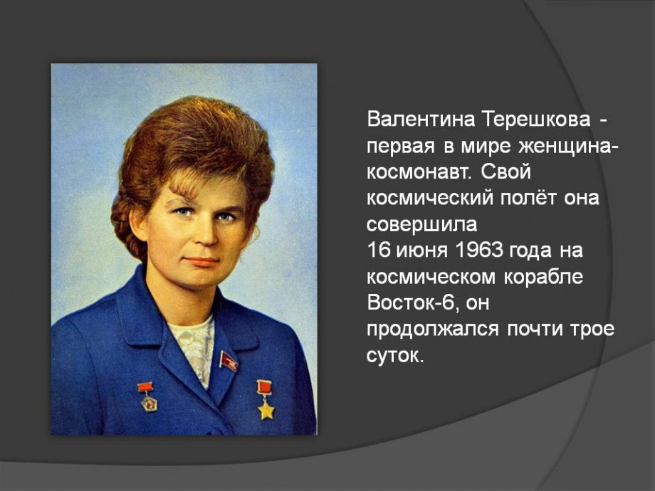
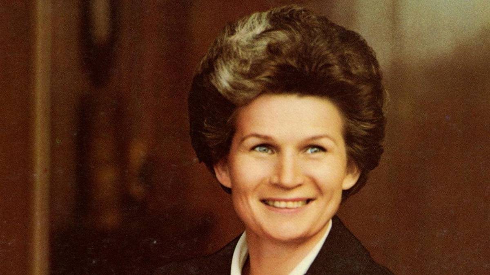

Добро пожаловать в космическое путешествие!
Погрузись в историю первой женщины-космонавта, открой для себя удивительные факты, посмотри фото и сыграй в космическую игру!



Погрузись в историю первой женщины-космонавта, открой для себя удивительные факты, посмотри фото и сыграй в космическую игру!

Ранние годы: Терешкова родилась 6 марта 1937 года в деревне Большое Масленниково на Волге в Ярославской области. Её отец был водителем трактора и сержантом в Советской армии. Когда девочке было всего два года, отец погиб во время зимней войны в Финляндии. Мать одна воспитывала трёх детей, работая на текстильном производстве.
Образование и карьера до космоса: Начальную школу Валентина закончила в возрасте 16 лет. Затем работала на ткацкой фабрике и заводе, занималась корреспондентским образованием. Самым главным увлечением Валентины был парашютный спорт — её опыт прыжков с парашютом и стал ключевым фактором при отборе в космонавты. Она совершила свой первый прыжок 21 мая 1959 года в возрасте 22 лет.
Отбор в космонавты: В 1962 году из 400 кандидатов была отобрана вместе с четырьмя другими женщинами в отряд космонавтов. Прошла суровую подготовку: центрифугу, изоляционные тесты, прыжки на воду, тренировки на боевых самолётах МиГ-15. Её позывной при полёте — «Чайка».
Дата полёта: 16 июня 1963 года Терешкова была запущена в космос на корабле «Восток-6». Она стала первой женщиной, совершившей космический полёт. Её позывной был «Чайка».
Параметры полёта: Полёт продолжался 2 дня, 22 часа и 50 минут. За это время она совершила 48 оборотов вокруг Земли, пролетев около 1,6 млн км. На момент полёта Терешкова была одной из молодых — ей было всего 26 лет. Она остаётся самой молодой женщиной, когда-либо летавшей в космос!
Исторический факт: За один полёт Валентина провела в космосе больше времени, чем все американские астронавты, летавшие до неё, вместе взятые! Её полёт продолжался дольше, чем полёты первого человека в космосе Юрия Гагарина.
Работа в космосе: Во время полёта Валентина проводила научные эксперименты, вела дневник наблюдений, фотографировала горизонт Земли. Она разговаривала с советским премьером Никитой Хрущёвым по радио. Хотя женщина испытывала некоторый дискомфорт и тошноту, она успешно справилась со всеми задачами миссии.
Возвращение на Землю: Приземлилась в Казахстане, в 620 км северо-восточнее Карганды. При парашютном спуске получила ушиб носа из-за сильного ветра, но благополучно приземлилась на земле.
Терешкова совершила 42 зарубежных визита между 1963 и 1970 годами — больше, чем любой другой советский космонавт.



🎮 КАК ИГРАТЬ:
✨ Управление: мышкой/клик по звёздам
✅ Цель: Собери все звёзды за 30 секунд
⚠️ Ограничение: звёзды появляются случайно, но не в углах и не рядом друг с другом
🎮 Игра 2: Управляй ракетой
Стрелками ← → передвигай ракету вдоль оси X и собирай кристаллы
Каждый собранный кристалл +10 баллов